Gefunden & gefixt an der linken Ecke: 69 Streupixel-Komponenten (Reste des weggelöschten Kontaktschattens, alpha≈4), weißer Bleed-Saum entlang der Stufen- und Sockelkanten, eine angefressene Kerbe an der unteren Sockelkante und die unvollständige Eckspitze (Seitenfläche fehlte). Die Kanten wurden entlang der gefitteten Iso-Linien (Steigung ±0.497, Seitenfläche 8 px) rekonstruiert und die gesamte Silhouette bekam sauberes Anti-Aliasing (das Original hatte harte 0/255-Kanten).
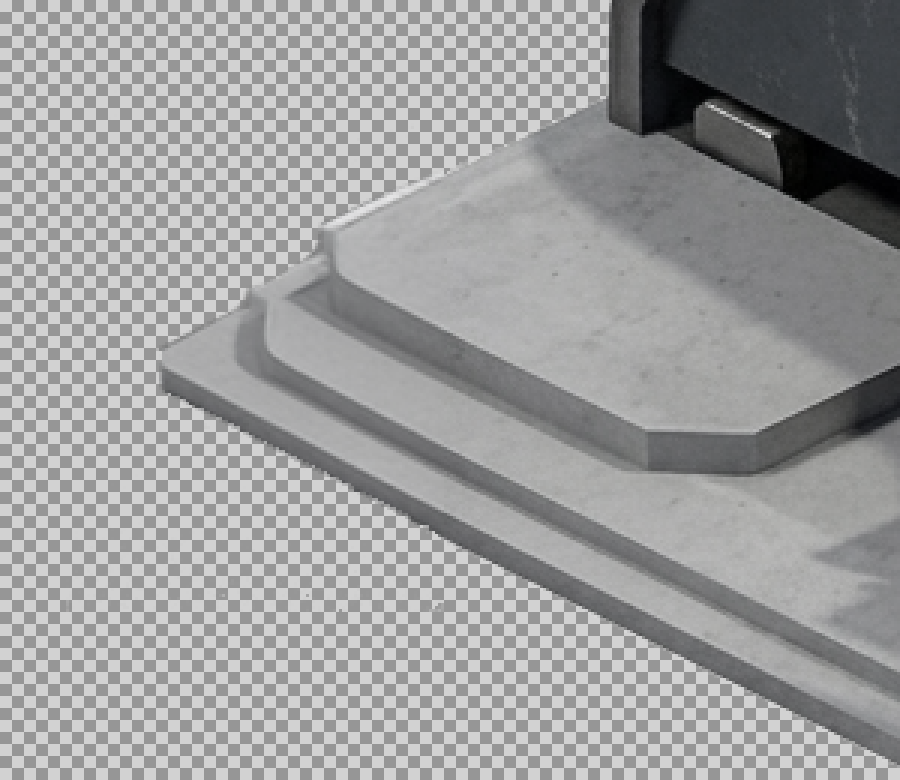
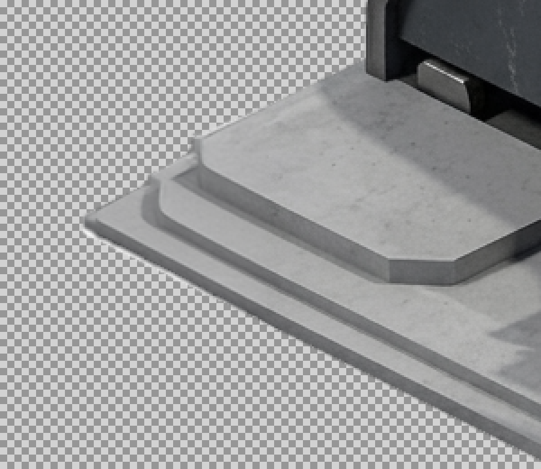
Ergebnis gespeichert als interpolated/gdi-construction-yard-gtcnst-frame0_v2_clean.png — das Original blieb unangetastet.
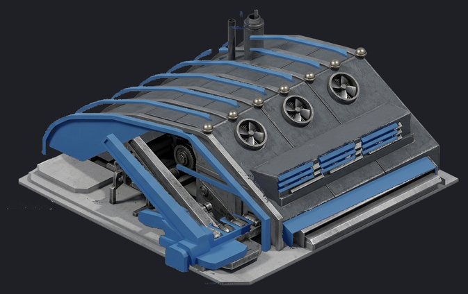
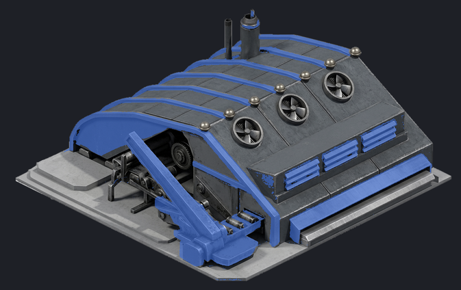
Referenz alt (blaue Bereiche = bisherige Player-Color-Stellen) und drei Varianten auf dem neuen Sprite:
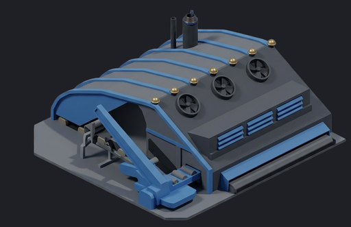
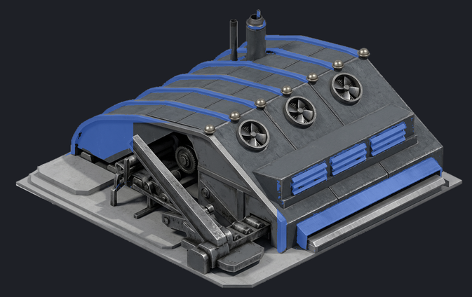
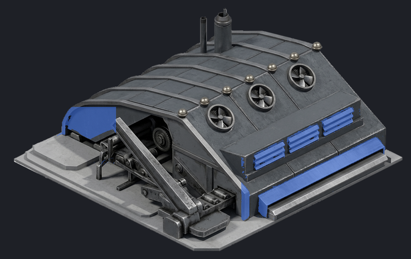
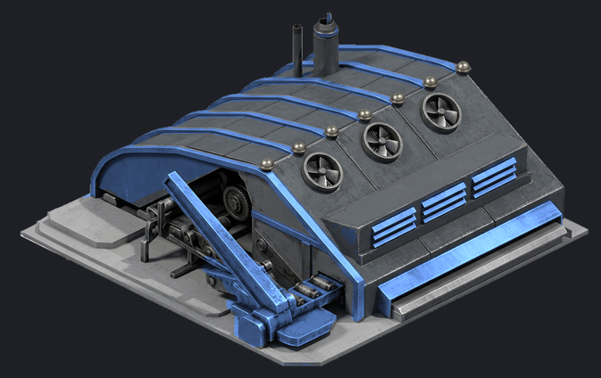
Das finale Remap-PNG (Palette-Indizes, volle 16er-Rampe wie beim Silo) baue ich nach deiner Wahl — dann nicht aus der warpten Maske, sondern sauber entlang der Strukturen des neuen Sprites nachgezogen.
7 Frames wie zuvor: die drei Lüfter drehen (90°/7 pro Frame → nahtloser 4-Blatt-Loop, Ellipsen pro Lüfter
automatisch gefittet), und das Lauflicht wandert wieder über die 7 Messingkugeln entlang der Dachkante
(Glow-Blob aus der alten Anim übernommen, auf v2-Maßstab skaliert). Sheet:
interpolated/gdi-construction-yard-gtcnst-anim_v2.png (1346×848/Frame, FrameSize/FrameAmount-Chunks gesetzt).
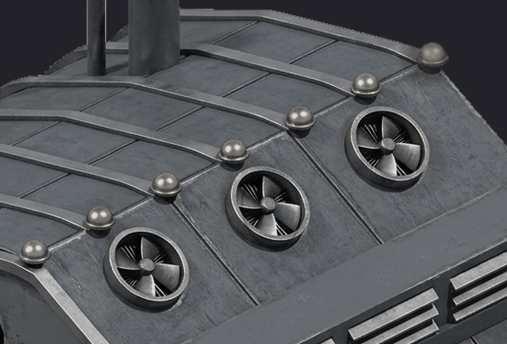
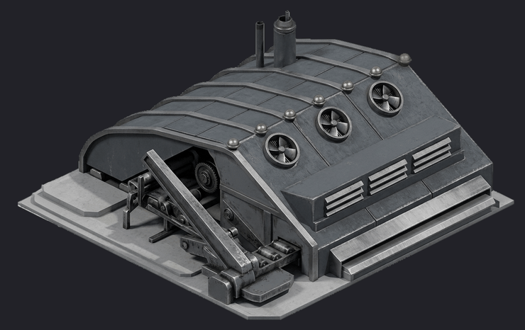
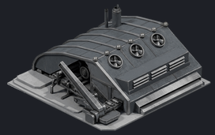
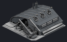
Hinweis Beim Loop-Übergang (Frame 6 → 0) springt die Beleuchtung der Blätter minimal, weil die Blätter unterschiedlich beleuchtet sind. Bei In-Game-Größe (~5 px pro Lüfter) unsichtbar — falls es doch stört, kann ich die Blatt-Beleuchtung symmetrisieren.